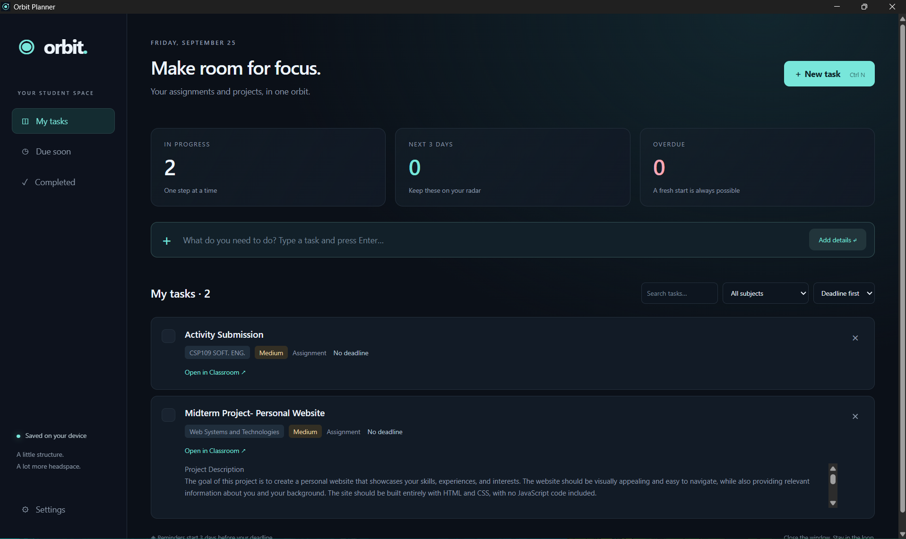
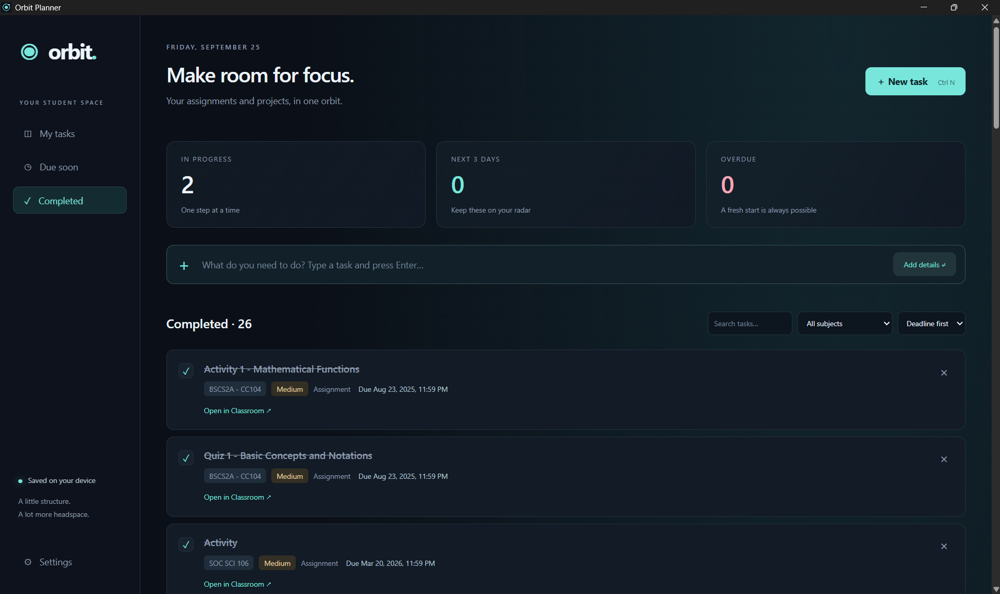
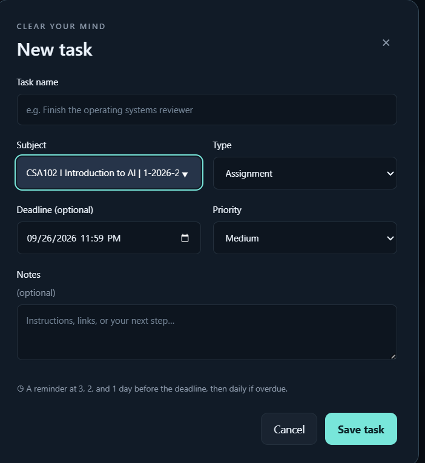

Programming
My main programming languages.
- Dart
- Java
- Python
LEARNING. BUILDING. EXPLORING.
Computer Science Student
Aspiring Data Scientist Developer
[Hero introduction placeholder — a short introduction about my background, interests, and goals will be added here.]
Curious about data. Interested in what comes next.
SCROLL TO EXPLORE01 / ABOUT ME
I'm Bryan, a Computer Science student who enjoys figuring out how things work—and learning how to build them.
I'm currently taking a Bachelor of Science in Computer Science at the University of Northern Philippines, in BSCS 3A. I'm interested in coding, technology, artificial intelligence, and especially data science.
My projects give me a chance to put classroom lessons into practice. I'm still developing my skills, from building applications to working with databases and exploring how data can help answer questions.
02 / SKILLS
Technologies and concepts I'm learning
through coursework and projects.
My main programming languages.
03 / SELECTED PROJECTS
Student projects. Practical ideas.
Lessons carried into the next build.
A little more direction.
A simpler campus day.
A student-focused Flutter app that brings class schedules and GPS-based campus navigation together. It finds the nearest campus node, calculates a route, and guides students toward their destination.
Rule-based insights use schedule information to highlight upcoming classes and offer navigation prompts.
Original app captures. The navigation image shows an earlier interface; the current project uses GPS. Select an image to view it in full.
Make room for focus.
An assignment and project organizer that connects with Google Classroom to bring coursework into one place. It helps students keep track of deadlines, priorities, and reminders, with links back to their Classroom assignments.
BUILT AROUND STUDENT LIFE



One of my earliest major programming projects: a Java desktop application connected to a MySQL database. It stored book IDs, titles, details, and availability, with separate administrator and user roles.
Add and manage books, review and approve borrowing transactions, and view system records.
Browse available books, borrow titles, and create borrowing transactions.
What I learned: database connections, CRUD operations, user roles, and library transaction workflows.
Source code is no longer available.
04 / EXPERIENCE
My experience so far comes from coursework, personal experimentation, and student projects. I don't have formal work experience yet.
Building student applications with Dart and Flutter, and working with HTML, CSS, and JavaScript for web projects. Using Git and GitHub to manage and share code.
Connecting Java applications to MySQL, practicing CRUD operations, and organizing data around user roles and application workflows.
Exploring Python, data analysis, and introductory machine learning through academic exercises and classification projects.
Studying object-oriented programming, algorithms and data structures, and compiler and programming language concepts through coursework.
05 / EDUCATION
From engineering to computer science,
with plenty still to learn.
2024 — PRESENT Current
Bachelor of Science in Computer Science
BSCS 3A
2020 — 2023
Civil Engineering studies
2018 — 2020
Senior High School · STEM
2014 — 2018
Junior High School
06 / ACHIEVEMENTS & CERTIFICATES
PROGRAMMING
Programming Competition
College Foundation Event
SPEEDCUBING
Rubik's Cube Speedcubing
College Foundation Event
ACADEMICS
Academic Excellence
AI LITERACY
Introduction to AI Literacy and Responsible Use
07 / RESUME
View my complete resume for more about my background, education, and skills.
08 / CONTACT
Have a question about a project, or want to share an idea? Get in touch.